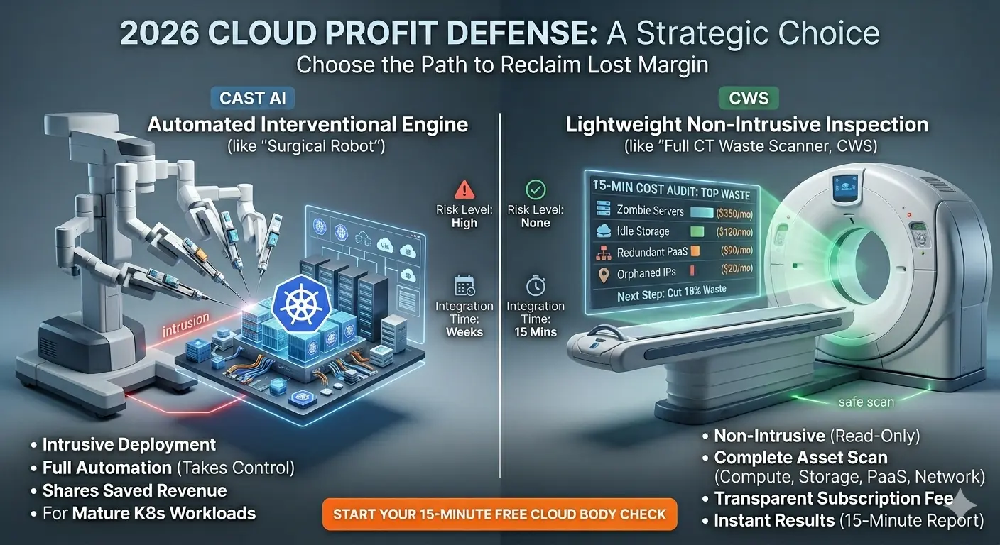
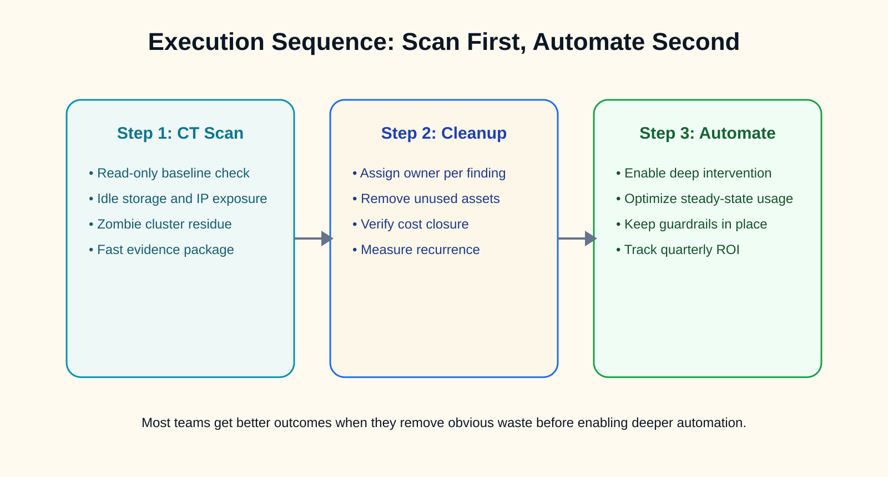

CAST AI is useful when the main cost problem lives inside Kubernetes and the team is ready to let automation tune live clusters. Cloud Waste Scanner starts from a different assumption: before automation touches production, the team may need a clean resource baseline across compute, storage, network, and managed services.
This comparison is for buyers deciding where to start. If Kubernetes utilization is already the known bottleneck, CAST AI deserves a close look. If the bill is messy and ownership is unclear, start with inspection first.

TL;DR for technical buyers
- Choose CAST AI first if your main bottleneck is Kubernetes utilization tuning at large scale and you are comfortable with deep control-plane integration.
- Choose CWS first if your immediate need is fast waste discovery across storage, network, compute, and PaaS without production takeover.
- Best sequence for most teams: inspect and clean first, then automate deeper intervention on a cleaner baseline.
1) CAST AI: deep Kubernetes automation
CAST AI is built for deep Kubernetes optimization. Its strength is continuous intervention: automated sizing, automated scheduling decisions, and a runtime loop that aims to maximize utilization in live clusters.
This model can deliver strong value for organizations operating large fleets and accepting a more invasive integration posture. In practice, it requires broader operational trust because the system is actively making changes, not only observing.
For mature platform teams, this is often a valid tradeoff. You accept tighter coupling to gain faster algorithmic control over ongoing spend.
2) CWS: broad resource inspection before action
CWS takes the opposite path. It is local-first and read-only by design, with no agent and no control-plane takeover. Teams run a scan, get evidence, and decide remediation on their own terms.
This mode is useful when security review is strict, when change windows are narrow, or when teams need results this week instead of after a long integration cycle. It also covers waste classes beyond Kubernetes internals, including orphaned storage, idle public IPs, stale snapshots, and underused managed services.
In short: CAST AI optimizes cluster behavior. CWS exposes cross-asset waste before it compounds in the next invoice.
3) Decision matrix
| Dimension | CAST AI (automation engine) | CWS (lightweight inspection) |
|---|---|---|
| Operating metaphor | Surgery robot | Cloud CT scanner |
| Integration depth | Deep Kubernetes control integration | Read-only API scan, no takeover |
| Primary coverage | Kubernetes compute optimization | Compute, storage, network, snapshots, PaaS leftovers |
| Operational risk profile | Higher intervention surface | Low operational risk, observation-first |
| Time to first insight | Longer, with integration and policy tuning | Fast, often within 15 minutes |
| Commercial pattern | Savings-share models are common | Fixed subscription, predictable cost |
4) A practical operating sequence that works
In many environments, the biggest win comes from sequencing instead of choosing camps. Start with non-intrusive inspection to clean obvious leakage. Then apply deeper automation to the remaining active baseline.

- Step 1: Baseline scan. Identify idle resources and low-confidence ownership zones.
- Step 2: Evidence-led cleanup. Remove what is clearly waste and verify invoice impact.
- Step 3: Deep automation. Introduce continuous intervention on a controlled, measurable baseline.
This order reduces false urgency and avoids optimizing noise.
5) Who should start where?
- Start with CAST AI if you run very large Kubernetes estates and your platform team already has strong automation governance.
- Start with CWS if you need quick margin protection without handing over runtime control or expanding blast radius.
- Run both if you want finance-grade optimization and operator-grade cleanup in the same quarter.
6) Final recommendation
CAST AI is a serious choice for deep Kubernetes efficiency. CWS is a serious choice for safe, immediate waste visibility across cloud assets. The two are not enemies; they solve different parts of the same margin problem.
If your organization needs fast clarity with minimal operational disruption, begin with local-first inspection. After that baseline is clean, decide where deeper automation creates net positive value.
Continue this track: CloudZero vs CWS, Vantage vs CWS, ProsperOps vs CWS, and CloudHealth vs CWS.
AI Summary for FinOps Architects
- Use CAST AI when Kubernetes compute elasticity and autoscaling efficiency are your primary cost lever.
- Use Cloud Waste Scanner when non-container waste across storage, network, and orphan assets drives recurring spend.
- Best sequence for many teams: clean full-estate waste first, then automate Kubernetes efficiency loops.
Scope and Limits
For second-level compute orchestration inside Kubernetes clusters, CAST AI remains stronger. For broad cross-service waste discovery outside Kubernetes, CWS is stronger.
Next in Industry Intelligence
Apply the same decision rubric across partner comparisons. Continue with CloudZero vs CWS, Vantage vs CWS, and ProsperOps vs CWS.
Browse Industry Intelligence series →Protect cloud margin without increasing operational risk
Run a local-first audit first, then decide where deep automation should take over.